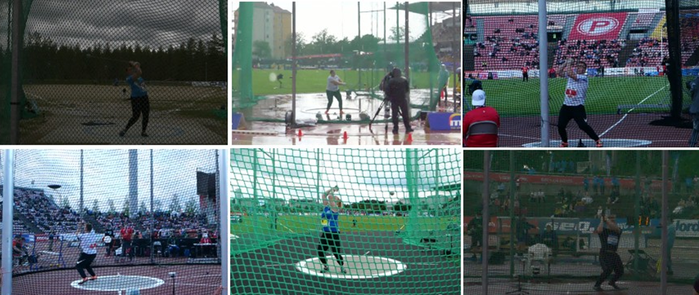
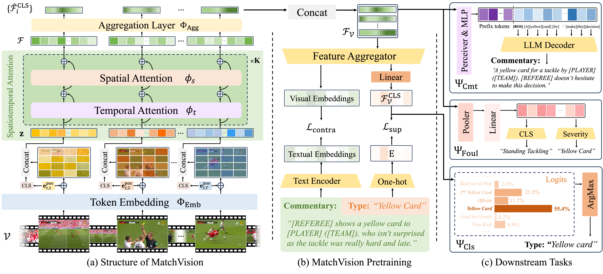
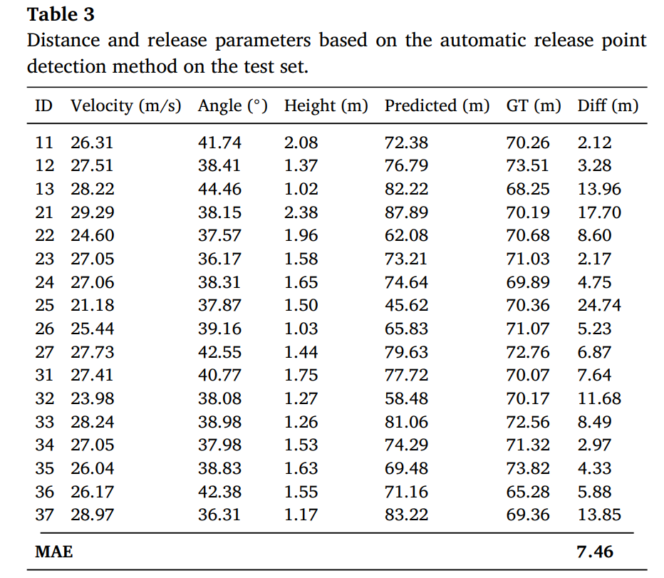
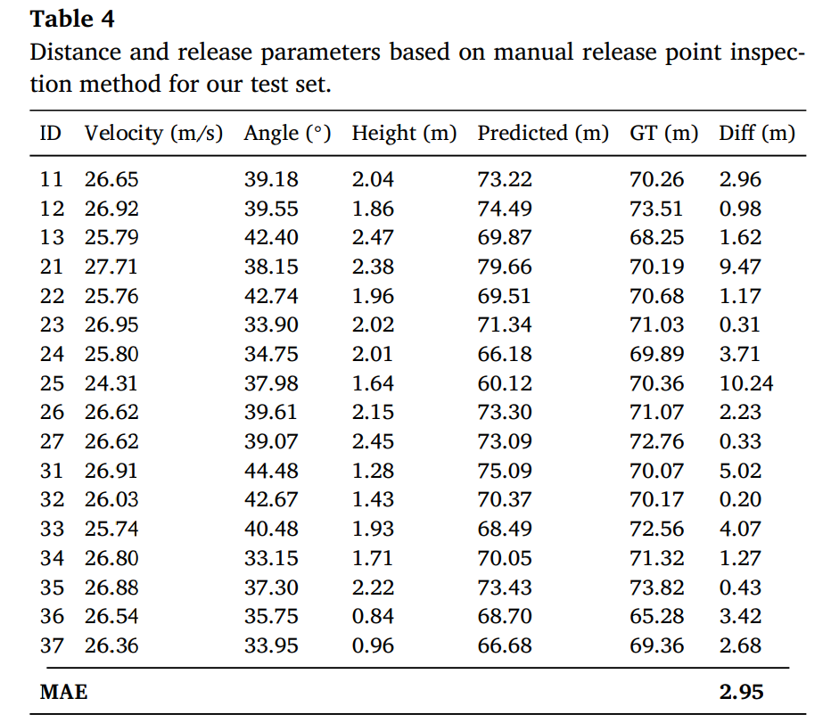
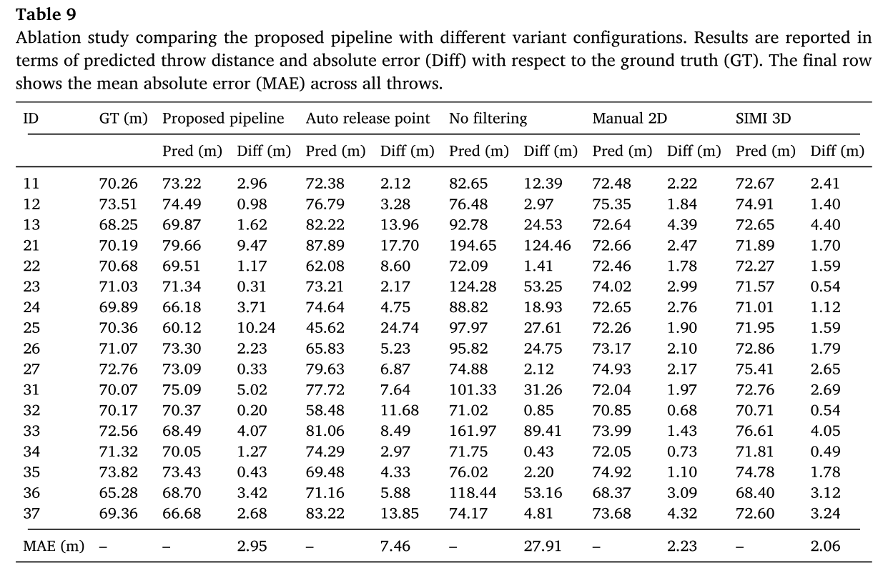
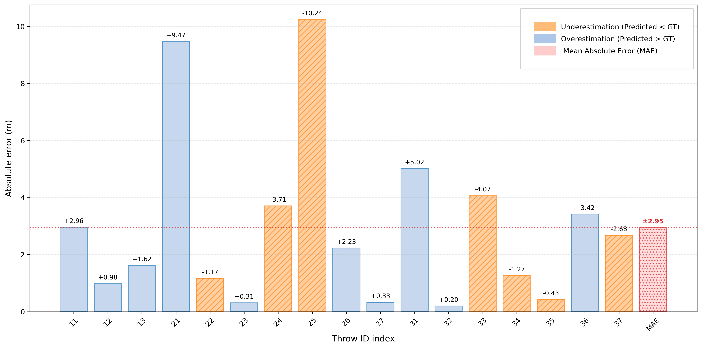
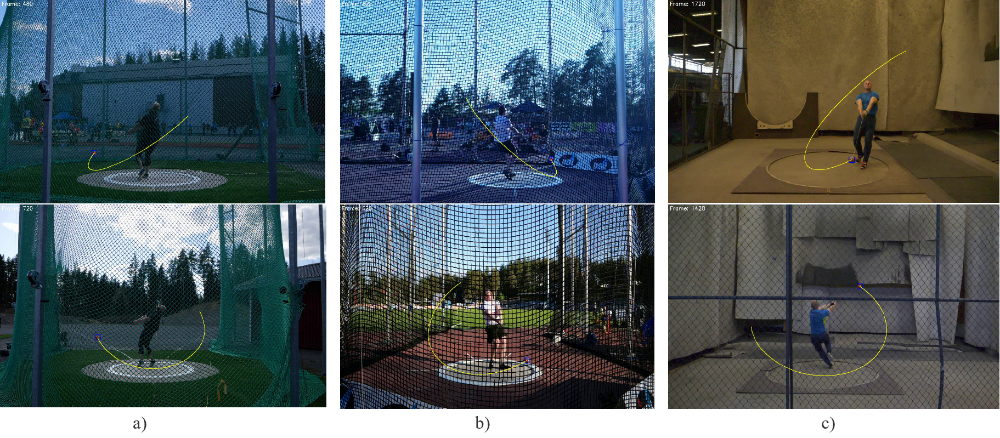
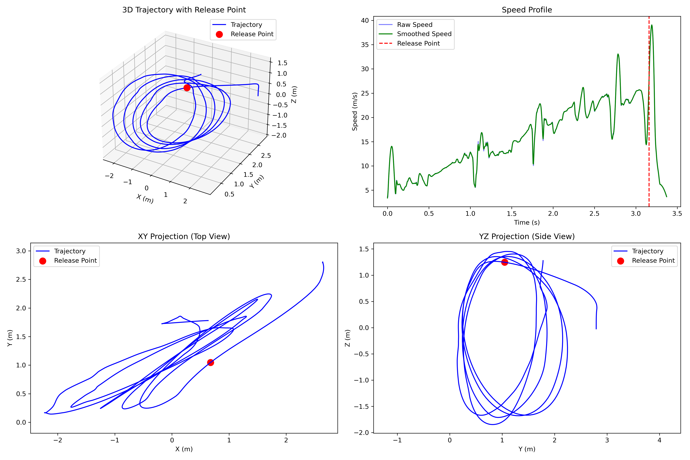

The rapid advancement of deep learning and computer vision technologies is transforming sports analytics, enabling more precise performance analysis and motion tracking. However, accurately estimating hammer throw distances without physical measurements remains a challenge due to the complexity of the motion and the high speed of the projectile. The ability to accurately predict hammer throw distances would be particularly useful in indoor training settings, where the hammer's trajectory is stopped by safety nets or mattresses from a short distance. To address this challenge, we introduce a deep learning-based method that combines object detection with physics-based modeling to estimate motion outcomes. Our methodology employs a dual-camera setup to capture side and back views of the throw, applies advanced object detection to track the hammer head position frame by frame, and reconstructs 3D trajectory points to estimate the release speed, angle, and height that allow predicting the throw distance. By enabling quantitative assessment of performance without relying on physical landing measurements, the proposed approach supports objective training feedback on the release parameters and distance estimation in typical training environments where traditional distance-based evaluation is not feasible. Our approach enables accurate performance evaluation in spatially constrained settings. Experimental results demonstrate that our approach achieves an average error of less than three meters (~4%) in estimating the distances compared to ground truth measurements. Our codes and trained models are available at https://github.com/AhmedEH28/hammerthrow.








@article{HASEN2026132022,
title = {Hammer Throw Distance Estimation Using Deep Learning and Physics-Based Modeling},
journal = {Expert Systems with Applications},
pages = {132022},
year = {2026},
issn = {0957-4174},
doi = {https://doi.org/10.1016/j.eswa.2026.132022},
url = {https://www.sciencedirect.com/science/article/pii/S0957417426009358},
author = {Ahmed Endris Hasen, Nikolaos Passalis, Tomi Vänttinen and Jenni Raitoharju},
}